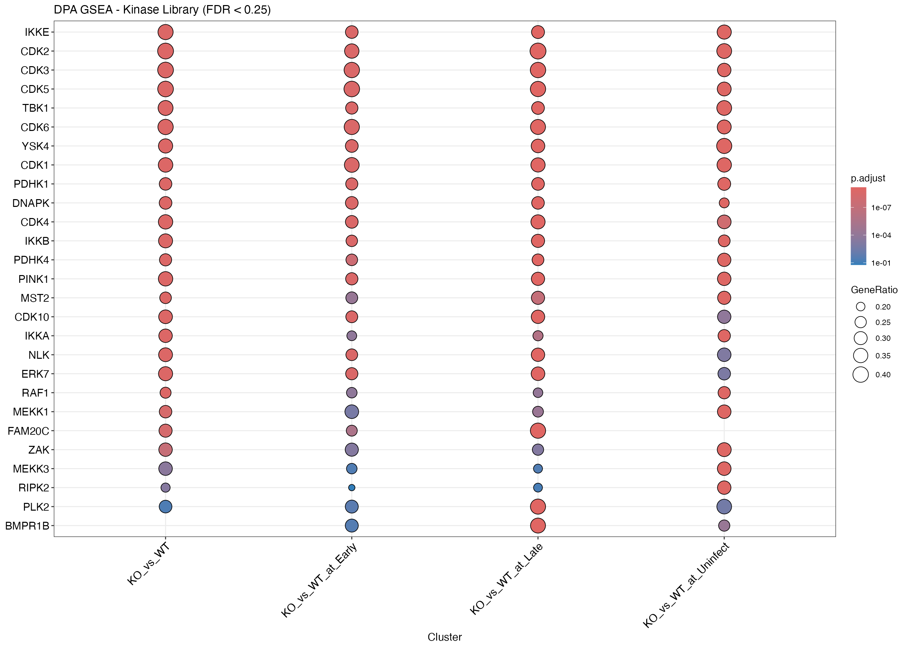
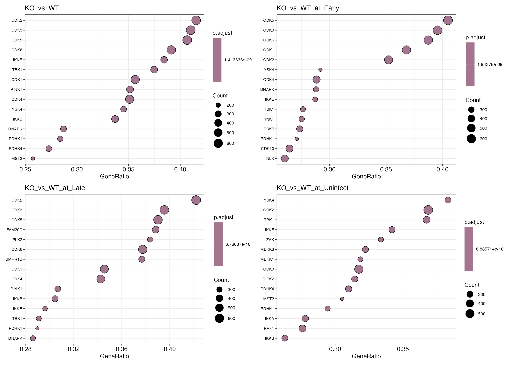
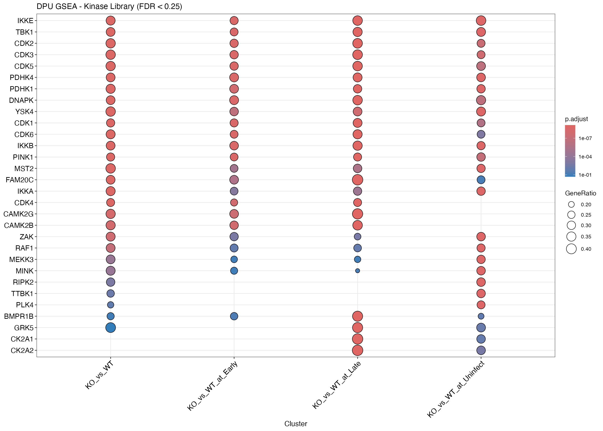
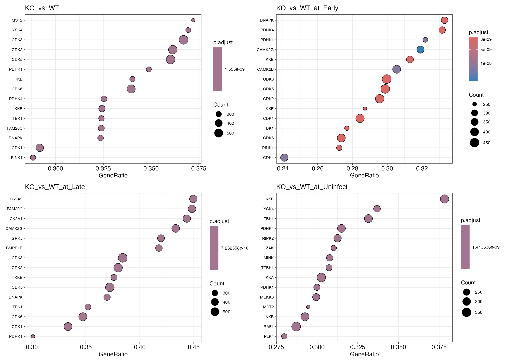
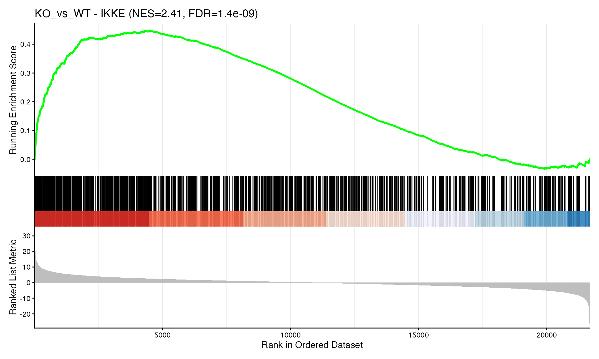

Kinase Library: Kinase Activity Inference from Phosphoproteomics Data
Analysis_KinaseLibrary.RmdIntroduction
This vignette demonstrates kinase activity inference using the Kinase Library motif predictions. Unlike PTMsigDB (which uses curated kinase-substrate relationships), Kinase Library predicts kinase-substrate assignments based on position-specific scoring matrices (PSSMs) derived from peptide library screens.
We use the term2gene.csv file generated by the
scan_motifs_cli.py script, which contains kinase-sequence
assignments at the 90th percentile threshold.
Approach: GSEA (Gene Set Enrichment Analysis) using ranked phosphosite statistics.
We analyze both DPA (Differential PTM Abundance) and DPU (Differential PTM Usage) results.
Load Data and Kinase Library Predictions
library(prophosqua)
library(clusterProfiler)
library(dplyr)
library(enrichplot)
library(purrr)
example_path <- here::here("data", "combined_test_diff_example.rds")
example_data <- readRDS(example_path)
data_info <- tibble(
Property = c("Rows", "Columns", "Contrasts"),
Value = c(nrow(example_data), ncol(example_data),
paste(unique(example_data$contrast), collapse = ", "))
)
knitr::kable(data_info, caption = "Example Data")| Property | Value |
|---|---|
| Rows | 105824 |
| Columns | 56 |
| Contrasts | KO_vs_WT, KO_vs_WT_at_Early, KO_vs_WT_at_Late, KO_vs_WT_at_Uninfect |
zip_path <- system.file("extdata", "term2gene.csv.zip", package = "prophosqua")
term2gene <- read.csv(unz(zip_path, "term2gene.csv"))
kl_info <- tibble(
Property = c("Total assignments", "Unique kinases", "Unique sequences"),
Value = c(nrow(term2gene), n_distinct(term2gene$term), n_distinct(term2gene$gene))
)
knitr::kable(kl_info, caption = "Kinase Library Predictions")| Property | Value |
|---|---|
| Total assignments | 384764 |
| Unique kinases | 311 |
| Unique sequences | 18935 |
# IMPORTANT: Kinase Library sequences have lowercase letters for phosphorylated residues
# (e.g., "PETITIRsGPPSPLP"). Convert to uppercase to match our data.
term2gene <- term2gene |>
mutate(gene = toupper(gene))
# Keep as TERM2GENE format for clusterProfiler GSEA
term2gene_df <- term2gene |>
select(term, gene)Kinase-Substrate Assignment Statistics
our_sequences <- example_data |>
pull(SequenceWindow) |>
trimws() |>
toupper() |>
unique()
assigned_sequences <- unique(term2gene$gene)
overlap_seqs <- intersect(our_sequences, assigned_sequences)
assignment_stats <- tibble(
Metric = c("Phosphosites in differential analysis",
"Sites with kinase assignments",
"Sites usable for GSEA",
"Coverage (%)"),
Value = c(length(our_sequences),
length(assigned_sequences),
length(overlap_seqs),
round(100 * length(overlap_seqs) / length(our_sequences), 1))
)
knitr::kable(assignment_stats, caption = "Assignment Statistics (90th percentile threshold)")| Metric | Value |
|---|---|
| Phosphosites in differential analysis | 21683.0 |
| Sites with kinase assignments | 18902.0 |
| Sites usable for GSEA | 18902.0 |
| Coverage (%) | 87.2 |
# Calculate kinase set sizes from term2gene
kinase_sizes <- term2gene_df |>
count(term, name = "size")
kinase_overlap <- term2gene_df |>
filter(gene %in% our_sequences) |>
count(term, name = "overlap")
kinase_stats <- tibble(
Metric = c("Number of kinases", "Mean substrates/kinase", "Median substrates/kinase",
"Range (min-max)", "Mean substrates in our data",
"Kinases with >= 15 substrates"),
Value = c(nrow(kinase_sizes),
round(mean(kinase_sizes$size)),
median(kinase_sizes$size),
paste(min(kinase_sizes$size), "-", max(kinase_sizes$size)),
round(mean(kinase_overlap$overlap)),
sum(kinase_overlap$overlap >= 15))
)
knitr::kable(kinase_stats, caption = "Kinase Set Size Distribution")| Metric | Value |
|---|---|
| Number of kinases | 311 |
| Mean substrates/kinase | 1237 |
| Median substrates/kinase | 1288 |
| Range (min-max) | 588 - 1826 |
| Mean substrates in our data | 1237 |
| Kinases with >= 15 substrates | 311 |
DPA Analysis (Differential PTM Abundance)
DPA uses raw phosphosite fold changes, which include both true signaling changes and protein abundance effects.
Prepare DPA Data
# Prepare ranked lists using t-statistic
# Names must match sequences in term2gene
contrasts <- unique(example_data$contrast)
dpa_ranks <- contrasts |>
set_names() |>
map(function(ct) {
example_data |>
filter(contrast == ct) |>
mutate(seq = toupper(trimws(SequenceWindow))) |>
filter(!is.na(statistic.site)) |>
distinct(seq, .keep_all = TRUE) |>
arrange(desc(statistic.site)) |>
(\(df) setNames(df$statistic.site, df$seq))()
})
dpa_ranks_info <- tibble(
Contrast = names(dpa_ranks),
Sites = map_int(dpa_ranks, length)
)
knitr::kable(dpa_ranks_info, caption = "DPA Ranks Prepared")| Contrast | Sites |
|---|---|
| KO_vs_WT | 21682 |
| KO_vs_WT_at_Early | 21682 |
| KO_vs_WT_at_Late | 21682 |
| KO_vs_WT_at_Uninfect | 21682 |
DPA: GSEA
dpa_gsea_results <- names(dpa_ranks) |>
set_names() |>
map(function(ct) {
res <- GSEA(
geneList = dpa_ranks[[ct]],
TERM2GENE = term2gene_df,
minGSSize = 15,
maxGSSize = 5000,
pvalueCutoff = 0.25,
verbose = FALSE
)
if (nrow(res@result) == 0) {
stop("No GSEA results for contrast: ", ct,
". Check minGSSize/maxGSSize parameters.")
}
res
})
dpa_gsea_info <- tibble(
Contrast = names(dpa_gsea_results),
`Significant Kinases` = map_int(dpa_gsea_results, ~nrow(.x@result))
)
knitr::kable(dpa_gsea_info, caption = "DPA GSEA Results (FDR < 0.25)")| Contrast | Significant Kinases |
|---|---|
| KO_vs_WT | 178 |
| KO_vs_WT_at_Early | 207 |
| KO_vs_WT_at_Late | 238 |
| KO_vs_WT_at_Uninfect | 234 |
merged_dpa <- merge_result(dpa_gsea_results)
dotplot(merged_dpa, showCategory = 15,
title = "DPA GSEA - Kinase Library (FDR < 0.25)") +
ggplot2::theme(axis.text.x = ggplot2::element_text(angle = 45, hjust = 1))
dpa_plots <- names(dpa_gsea_results) |>
map(function(ct) {
dotplot(dpa_gsea_results[[ct]], showCategory = 15, title = ct) +
ggplot2::theme(axis.text.y = ggplot2::element_text(size = 8))
})
patchwork::wrap_plots(dpa_plots, ncol = 2)
DPU Analysis (Differential PTM Usage)
DPU uses protein-normalized phosphosite fold changes, representing true stoichiometry changes independent of protein abundance.
Prepare DPU Data
dpu_ranks <- contrasts |>
set_names() |>
map(function(ct) {
example_data |>
filter(contrast == ct) |>
mutate(seq = toupper(trimws(SequenceWindow))) |>
filter(!is.na(tstatistic_I)) |>
distinct(seq, .keep_all = TRUE) |>
arrange(desc(tstatistic_I)) |>
(\(df) setNames(df$tstatistic_I, df$seq))()
})
dpu_ranks_info <- tibble(
Contrast = names(dpu_ranks),
Sites = map_int(dpu_ranks, length)
)
knitr::kable(dpu_ranks_info, caption = "DPU Ranks Prepared")| Contrast | Sites |
|---|---|
| KO_vs_WT | 20949 |
| KO_vs_WT_at_Early | 20949 |
| KO_vs_WT_at_Late | 20949 |
| KO_vs_WT_at_Uninfect | 20949 |
DPU: GSEA
dpu_gsea_results <- names(dpu_ranks) |>
set_names() |>
map(function(ct) {
res <- GSEA(
geneList = dpu_ranks[[ct]],
TERM2GENE = term2gene_df,
minGSSize = 15,
maxGSSize = 5000,
pvalueCutoff = 0.25,
verbose = FALSE
)
if (nrow(res@result) == 0) {
stop("No GSEA results for contrast: ", ct,
". Check minGSSize/maxGSSize parameters.")
}
res
})
dpu_gsea_info <- tibble(
Contrast = names(dpu_gsea_results),
`Significant Kinases` = map_int(dpu_gsea_results, ~nrow(.x@result))
)
knitr::kable(dpu_gsea_info, caption = "DPU GSEA Results (FDR < 0.25)")| Contrast | Significant Kinases |
|---|---|
| KO_vs_WT | 134 |
| KO_vs_WT_at_Early | 138 |
| KO_vs_WT_at_Late | 183 |
| KO_vs_WT_at_Uninfect | 209 |
merged_dpu <- merge_result(dpu_gsea_results)
dotplot(merged_dpu, showCategory = 15,
title = "DPU GSEA - Kinase Library (FDR < 0.25)") +
ggplot2::theme(axis.text.x = ggplot2::element_text(angle = 45, hjust = 1))
dpu_plots <- names(dpu_gsea_results) |>
map(function(ct) {
dotplot(dpu_gsea_results[[ct]], showCategory = 15, title = ct) +
ggplot2::theme(axis.text.y = ggplot2::element_text(size = 8))
})
patchwork::wrap_plots(dpu_plots, ncol = 2)
Diagnostics
pval_diag <- names(dpa_gsea_results) |>
map_dfr(function(ct) {
res <- dpa_gsea_results[[ct]]@result
tibble(
Contrast = ct,
`Min p-value` = signif(min(res$pvalue), 3),
`p < 0.05` = sum(res$pvalue < 0.05),
`p < 0.01` = sum(res$pvalue < 0.01),
Total = nrow(res)
)
})
knitr::kable(pval_diag, caption = "Raw p-value Distribution (DPA)")| Contrast | Min p-value | p < 0.05 | p < 0.01 | Total |
|---|---|---|---|---|
| KO_vs_WT | 0 | 145 | 102 | 178 |
| KO_vs_WT_at_Early | 0 | 168 | 117 | 207 |
| KO_vs_WT_at_Late | 0 | 201 | 169 | 238 |
| KO_vs_WT_at_Uninfect | 0 | 210 | 175 | 234 |
if (length(dpa_gsea_results) > 0) {
top_res <- dpa_gsea_results[[1]]@result |>
as_tibble() |>
arrange(pvalue) |>
head(10) |>
select(ID, enrichmentScore, NES, pvalue, p.adjust, setSize) |>
mutate(
enrichmentScore = round(enrichmentScore, 3),
NES = round(NES, 3),
pvalue = signif(pvalue, 3),
p.adjust = signif(p.adjust, 3)
)
knitr::kable(top_res,
caption = paste("Top 10 Kinases by P-value (DPA,",
names(dpa_gsea_results)[1], ")"))
}| ID | enrichmentScore | NES | pvalue | p.adjust | setSize |
|---|---|---|---|---|---|
| IKKE | 0.447 | 2.406 | 0 | 0 | 895 |
| CDK2 | -0.446 | -2.395 | 0 | 0 | 1519 |
| CDK3 | -0.441 | -2.373 | 0 | 0 | 1575 |
| CDK5 | -0.435 | -2.342 | 0 | 0 | 1571 |
| TBK1 | 0.426 | 2.304 | 0 | 0 | 966 |
| CDK6 | -0.408 | -2.189 | 0 | 0 | 1510 |
| YSK4 | 0.402 | 2.133 | 0 | 0 | 788 |
| CDK1 | -0.391 | -2.101 | 0 | 0 | 1557 |
| PDHK1 | 0.385 | 2.058 | 0 | 0 | 849 |
| DNAPK | 0.374 | 2.030 | 0 | 0 | 993 |
GSEA Enrichment Plot (Example)
# Show single example for illustration (gseaplot2 objects don't combine well)
ct <- names(dpa_gsea_results)[1]
res <- dpa_gsea_results[[ct]]
top_kinase <- res@result |>
as_tibble() |>
arrange(pvalue) |>
slice(1) |>
pull(ID)
row <- res@result |>
as_tibble() |>
filter(ID == top_kinase)
nes_val <- round(row$NES, 2)
fdr <- signif(row$p.adjust, 2)
gseaplot2(res, geneSetID = top_kinase,
title = paste0(ct, " - ", top_kinase, " (NES=", nes_val, ", FDR=", fdr, ")"))
Session Info
## R version 4.5.2 (2025-10-31)
## Platform: aarch64-apple-darwin20
## Running under: macOS Tahoe 26.1
##
## Matrix products: default
## BLAS: /System/Library/Frameworks/Accelerate.framework/Versions/A/Frameworks/vecLib.framework/Versions/A/libBLAS.dylib
## LAPACK: /Library/Frameworks/R.framework/Versions/4.5-arm64/Resources/lib/libRlapack.dylib; LAPACK version 3.12.1
##
## locale:
## [1] en_US.UTF-8/en_US.UTF-8/en_US.UTF-8/C/en_US.UTF-8/en_US.UTF-8
##
## time zone: Europe/Zurich
## tzcode source: internal
##
## attached base packages:
## [1] stats graphics grDevices utils datasets methods base
##
## other attached packages:
## [1] purrr_1.2.0 enrichplot_1.30.3 dplyr_1.1.4
## [4] clusterProfiler_4.18.1 prophosqua_0.2.0
##
## loaded via a namespace (and not attached):
## [1] DBI_1.2.3 gson_0.1.0 rlang_1.1.6
## [4] magrittr_2.0.4 DOSE_4.4.0 compiler_4.5.2
## [7] RSQLite_2.4.5 png_0.1-8 systemfonts_1.3.1
## [10] vctrs_0.6.5 reshape2_1.4.5 stringr_1.6.0
## [13] pkgconfig_2.0.3 crayon_1.5.3 fastmap_1.2.0
## [16] XVector_0.50.0 labeling_0.4.3 rmarkdown_2.30
## [19] ragg_1.5.0 bit_4.6.0 xfun_0.54
## [22] ggseqlogo_0.2 cachem_1.1.0 aplot_0.2.9
## [25] jsonlite_2.0.0 blob_1.2.4 BiocParallel_1.44.0
## [28] parallel_4.5.2 R6_2.6.1 bslib_0.9.0
## [31] stringi_1.8.7 RColorBrewer_1.1-3 jquerylib_0.1.4
## [34] GOSemSim_2.36.0 Rcpp_1.1.0 Seqinfo_1.0.0
## [37] bookdown_0.46 knitr_1.50 ggtangle_0.0.9
## [40] R.utils_2.13.0 IRanges_2.44.0 Matrix_1.7-4
## [43] splines_4.5.2 igraph_2.2.1 tidyselect_1.2.1
## [46] qvalue_2.42.0 yaml_2.3.11 codetools_0.2-20
## [49] lattice_0.22-7 tibble_3.3.0 plyr_1.8.9
## [52] withr_3.0.2 Biobase_2.70.0 treeio_1.34.0
## [55] KEGGREST_1.50.0 S7_0.2.1 evaluate_1.0.5
## [58] gridGraphics_0.5-1 desc_1.4.3 Biostrings_2.78.0
## [61] pillar_1.11.1 ggtree_4.0.1 stats4_4.5.2
## [64] ggfun_0.2.0 generics_0.1.4 rprojroot_2.1.1
## [67] S4Vectors_0.48.0 ggplot2_4.0.1 scales_1.4.0
## [70] tidytree_0.4.6 glue_1.8.0 gdtools_0.4.4
## [73] lazyeval_0.2.2 tools_4.5.2 data.table_1.17.8
## [76] fgsea_1.36.0 ggiraph_0.9.2 fs_1.6.6
## [79] fastmatch_1.1-6 cowplot_1.2.0 grid_4.5.2
## [82] tidyr_1.3.1 ape_5.8-1 AnnotationDbi_1.72.0
## [85] nlme_3.1-168 patchwork_1.3.2 cli_3.6.5
## [88] rappdirs_0.3.3 textshaping_1.0.4 fontBitstreamVera_0.1.1
## [91] gtable_0.3.6 R.methodsS3_1.8.2 yulab.utils_0.2.2
## [94] sass_0.4.10 digest_0.6.39 fontquiver_0.2.1
## [97] BiocGenerics_0.56.0 ggrepel_0.9.6 ggplotify_0.1.3
## [100] htmlwidgets_1.6.4 farver_2.1.2 memoise_2.0.1
## [103] htmltools_0.5.9 pkgdown_2.2.0 R.oo_1.27.1
## [106] lifecycle_1.0.4 here_1.0.2 httr_1.4.7
## [109] GO.db_3.22.0 fontLiberation_0.1.0 bit64_4.6.0-1